Clínicas Odontológicas · Facultad de Odontología UAM
Una aplicación web funcional para las Clínicas Odontológicas de la Facultad de Odontología de la UAM. Está hecha en Python con Flask y plantillas HTML, guarda todo en una base de datos PostgreSQL en Neon (en la nube) y está publicada en Fly.io, así que se usa desde cualquier navegador.
| Qué | Dónde |
|---|---|
| Aplicación publicada | https://clinicas-odontologicas-uam.fly.dev |
| Código fuente | https://github.com/cfcruz-bit/clinicas-odontologicas (público) |
| Base de datos | Neon, proyecto clinicas-odontologicas, base neondb, región AWS us-east-1 |
Archivos del proyecto:
prototipo.py: toda la lógica: rutas, roles, validaciones, tablas de la base de datos, bitácora y el expediente en PDF.templates/: las plantillas Jinja de cada pantalla (base.html tiene la cabecera y las pestañas).static/: la hoja de estilos, el logo de la UAM, el ícono y la foto de fondo.pruebas.py: las pruebas automáticas; corren contra una rama de Neon aparte para no tocar los datos reales.requirements.txt, Dockerfile y fly.toml: lo que necesita Fly para construir y publicar la aplicación.capturas, separada de la base real. Ningún paciente que aparece aquí existe.Hay cinco cuentas iniciales, dos por cada tipo de usuario y una de la Facultad. La contraseña de todas es
uam2026; en la base de datos no se guarda así, sino cifrada (ver sección 6).
| CIF | Nombre | Rol |
|---|---|---|
| 00000001 | Dra. Grace Mendoza | Profesor |
| 00000004 | Dr. Gustavo Rivas | Profesor |
| 00000002 | Grace Alvarado | Estudiante |
| 00000005 | Gabriel Espinoza | Estudiante |
| 00000007 | Gina Saavedra | Facultad (admin) |
Estudiante: registra a sus pacientes, anota la razón de la consulta, agenda y cancela sus citas, corrige los datos de sus pacientes, recoge la firma del consentimiento y reporta las salas que no funcionan. Solo ve a los pacientes que tiene a cargo y no ve la bitácora.
Profesor: solo revisa. Ve a todos los pacientes, aprueba o retira la aprobación, ve el historial de qué le hizo cada estudiante a cada paciente, descarga el expediente en PDF y revisa la bitácora. No registra pacientes ni citas y no firma el consentimiento.
Facultad: administra las salas (agrega, marca disponibles o no), recibe los avisos de salas que no funcionan y las marca como solucionadas, pasa un paciente de un estudiante a otro archivando el trabajo del anterior, y revisa la bitácora.
No es solo esconder botones: cada ruta de prototipo.py vuelve a revisar el rol antes de tocar la base de
datos. Si alguien armara el formulario a mano, igual no pasaría; las pruebas lo intentan y comprueban que no se guarda nada.
Se escribe el CIF y la contraseña. Si falta alguno, la pantalla dice cuál; si no coinciden, dice "CIF o contraseña incorrectos" sin aclarar cuál de los dos falló. La sesión se cierra sola a los 30 minutos sin uso, porque en la clínica las computadoras son compartidas.
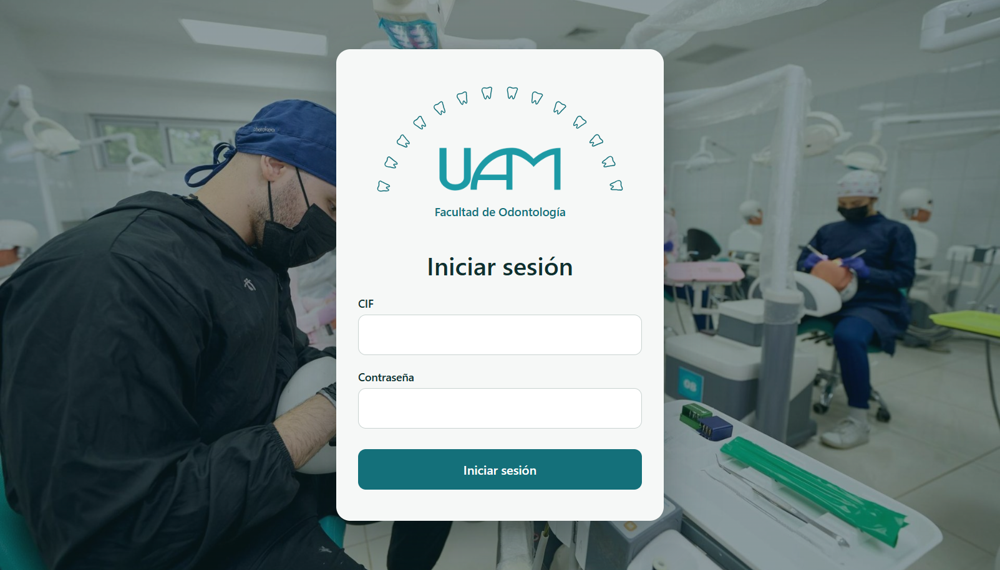
En "Mis pacientes" el estudiante llena nombre, cédula y teléfono. La lista muestra la razón de la consulta, si el profesor ya aprobó y si el consentimiento está firmado. Cada estudiante ve solo a sus pacientes.
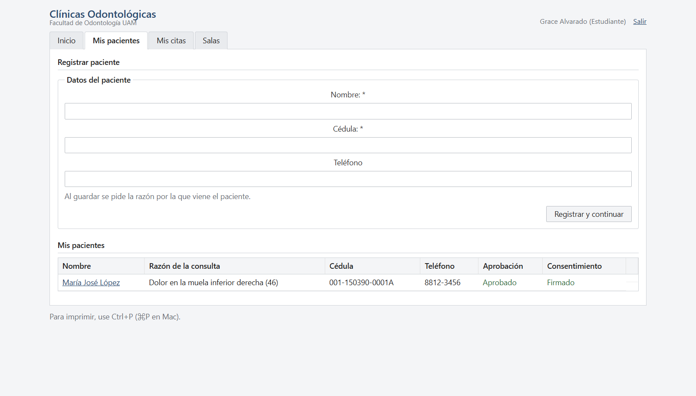
Al registrar, la aplicación pasa sola a preguntar por qué viene el paciente (obligatorio). En la misma pantalla se puede agendar la primera cita, con las mismas reglas que la página de Citas.
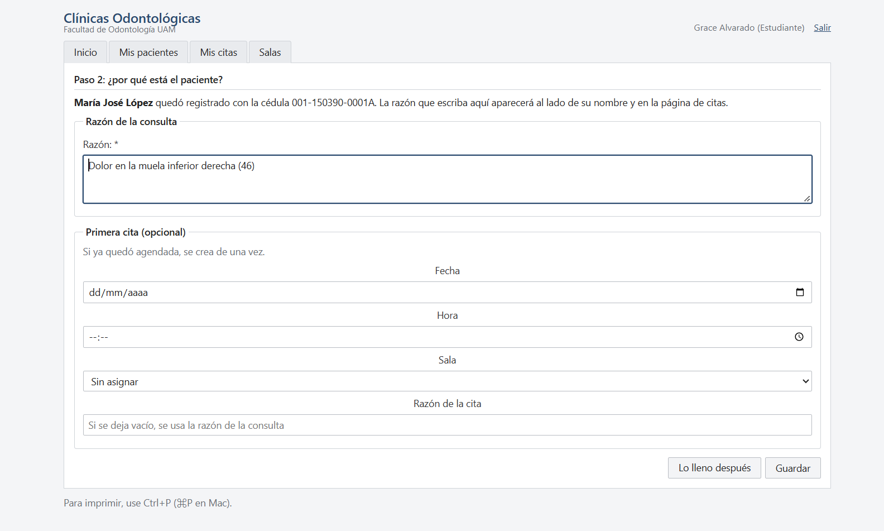
Datos del paciente, estado de aprobación y de la firma, el trabajo de cada estudiante que lo ha atendido y sus citas. Desde aquí el estudiante corrige los datos, cambia la razón o abre el consentimiento.
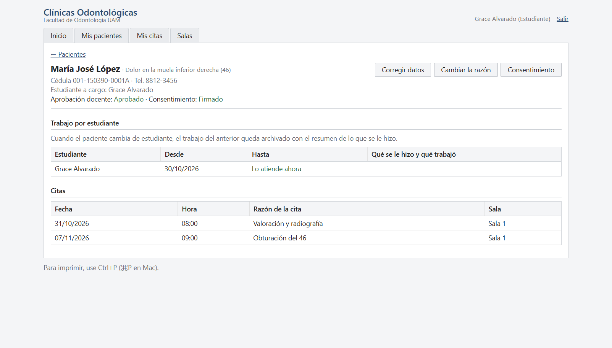
El paciente firma con el dedo (tableta o celular) o con el mouse. La firma se guarda como imagen y sale en la hoja impresa y en el PDF del expediente. El docente no firma.
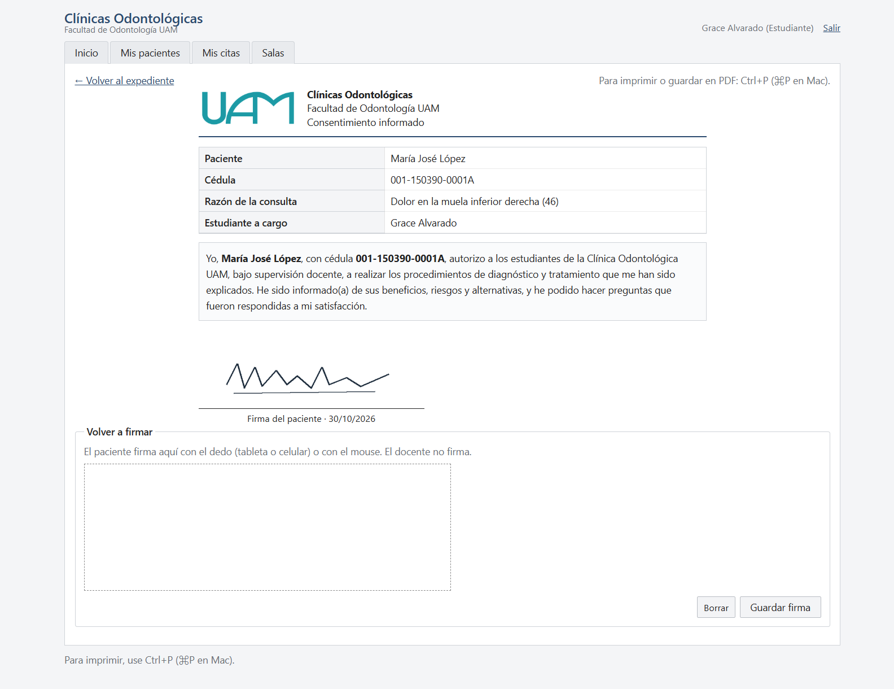
La fecha se elige en el calendario del navegador, que no deja elegir días anteriores a hoy. Las salas que no están disponibles salen desactivadas. Las citas que todavía no pasaron se pueden cancelar; las pasadas no, porque son historial del paciente.
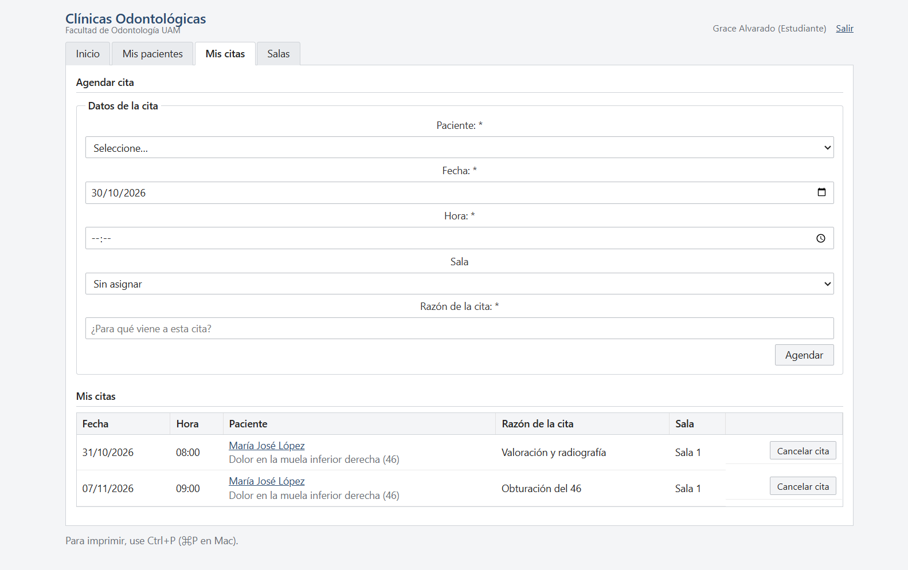
El plano muestra las 20 salas con ✓ si están disponibles y ✗ si no. Si una sala no funciona, el estudiante la elige, escribe qué falla y la envía: la sala queda como "No funciona" y la Facultad recibe el aviso.
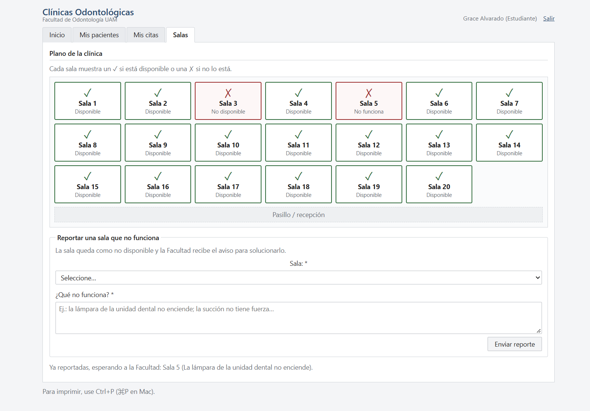
El profesor ve a todos los pacientes con el estudiante a cargo de cada uno, los aprueba o retira la aprobación y descarga el expediente en PDF. No tiene el formulario de registro.
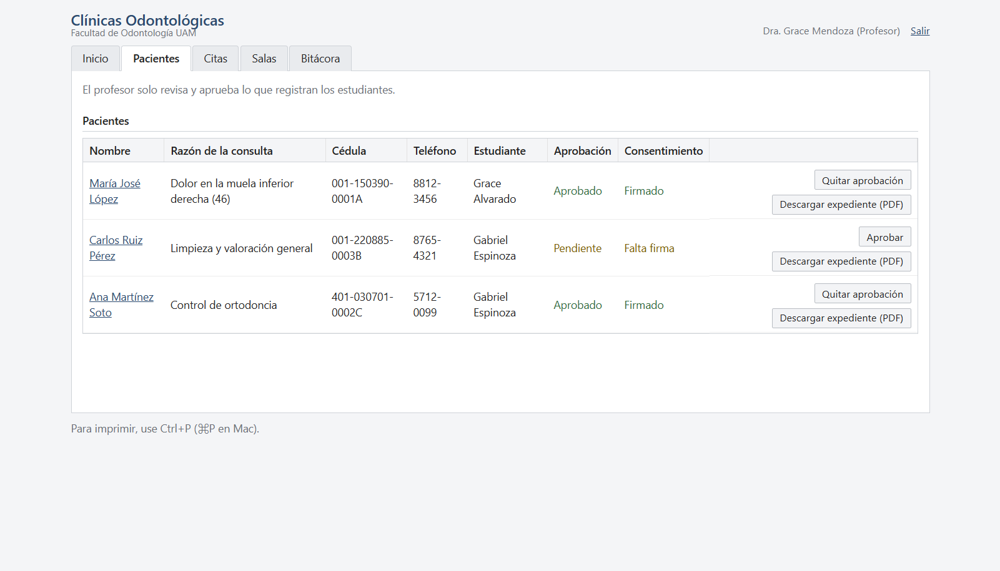
Cuando hay salas reportadas, la Facultad lo ve en Inicio y en la pestaña, que muestra cuántas son: "Salas (1)".
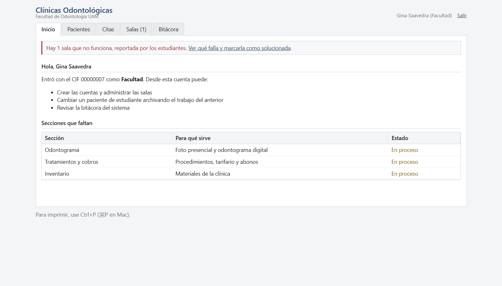
En Salas ve qué falla, quién lo reportó y cuándo. Al marcarla como solucionada, la sala vuelve a estar disponible y el aviso desaparece.
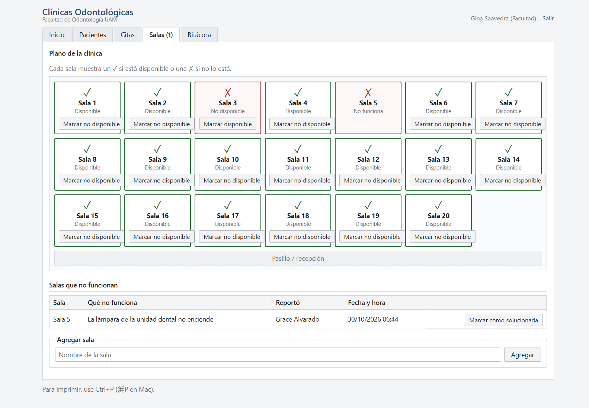
Solo la Facultad. Es obligatorio escribir qué se le hizo al paciente: ese resumen cierra el trabajo del estudiante anterior y queda archivado en el expediente.
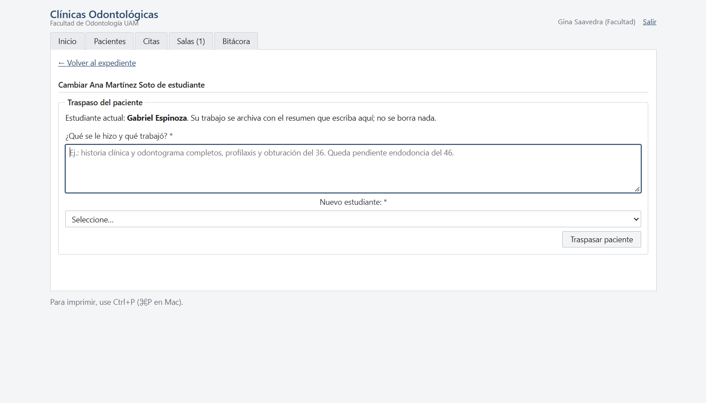
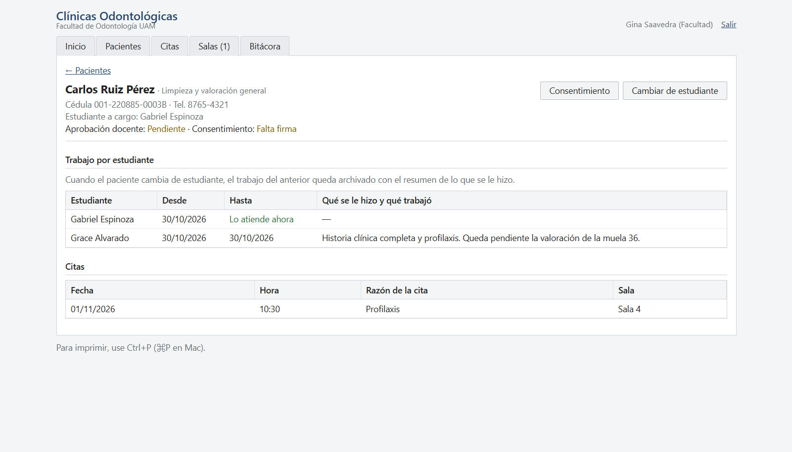
Quién hizo qué, a qué hora (hora de Nicaragua) y desde dónde. La ubicación es la ciudad aproximada de la conexión a internet; la IP solo se usa para averiguarla y no se guarda. En la captura dice "Red local" porque se tomó con la aplicación corriendo en la misma computadora. La ven el profesor y la Facultad.
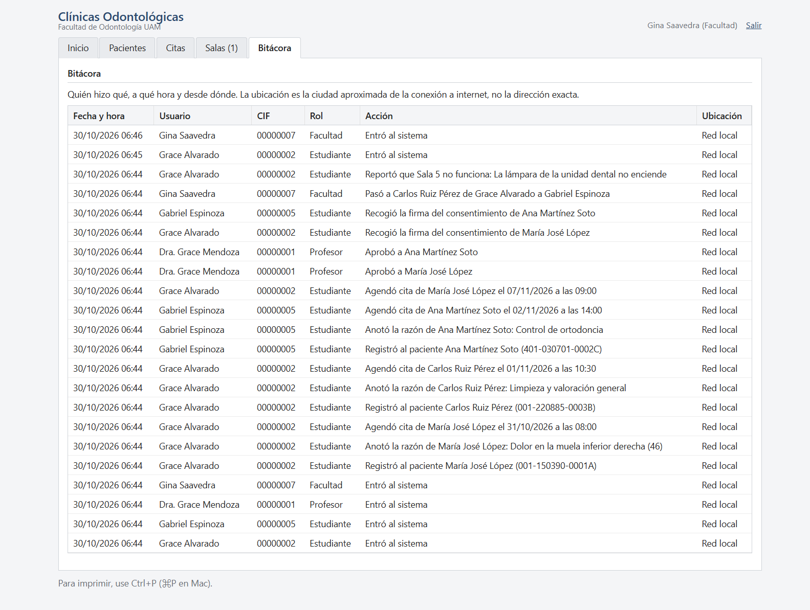
Neon es PostgreSQL en la nube. El proyecto clinicas-odontologicas tiene tres ramas, que son copias
independientes de la base:
| Rama | Para qué |
|---|---|
main | La base real: la que usa la aplicación publicada en Fly. |
pruebas | La usa pruebas.py. Se borra entera cada vez que corren las pruebas. |
capturas | Datos ficticios para las capturas de esta guía. |
Las tablas se crean solas con CREATE TABLE IF NOT EXISTS en cada despliegue: si ya existen no se tocan,
así que publicar una versión nueva nunca borra datos.
Figura 14. Cada flecha es una llave foránea (REFERENCES): apunta a la tabla de la que depende.
La bitácora (línea punteada) no tiene llaves foráneas a propósito: guarda una copia del nombre y el rol, para que el
registro no cambie aunque después cambie la cuenta.
| Tabla | Qué guarda | Detalles que conviene saber |
|---|---|---|
cuentas | CIF, nombre, rol y contraseña de cada usuario. | La contraseña se guarda cifrada (hash), nunca en texto. |
pacientes | Nombre, cédula, teléfono, razón, estudiante a cargo, aprobación y firma. | La cédula es UNIQUE: la base no deja repetirla. La firma es la imagen PNG en base64. |
trabajo | Un período por cada estudiante que atendió al paciente. | El período abierto tiene hasta vacío; al traspasar se cierra con el resumen. |
citas | Fecha, hora, sala y razón de cada cita. | Fecha en formato aaaa-mm-dd para que se ordene bien. |
salas | Las salas y si están disponibles. | El nombre es UNIQUE. |
reportes | Las fallas que reportan los estudiantes y quién las solucionó. | Un índice único parcial impide dos fallas abiertas en la misma sala. |
bitacora | Quién hizo qué, cuándo y desde dónde. | Se muestran las últimas 500 líneas. |
En la consola de Neon (console.neon.tech), en Tables, se elige la rama arriba a la izquierda y la
tabla en la lista; a la derecha salen sus filas. Con Schema se ven las columnas, sus tipos y las restricciones.
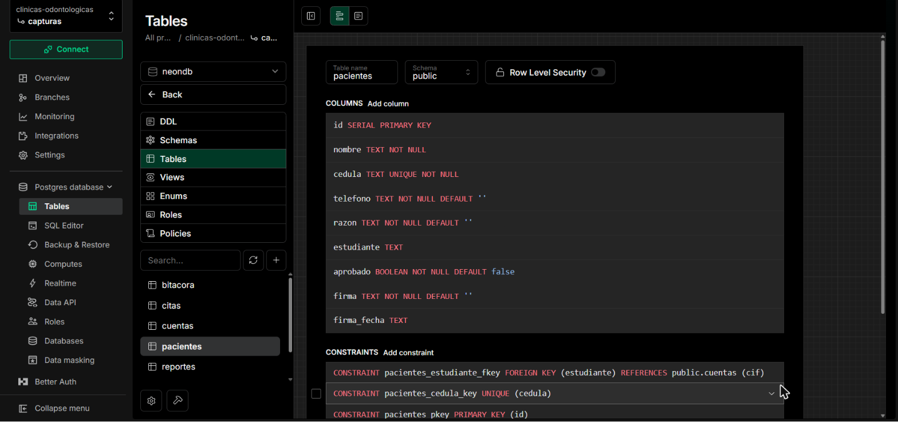
pacientes: la cédula única y la llave foránea del estudiante hacia cuentas.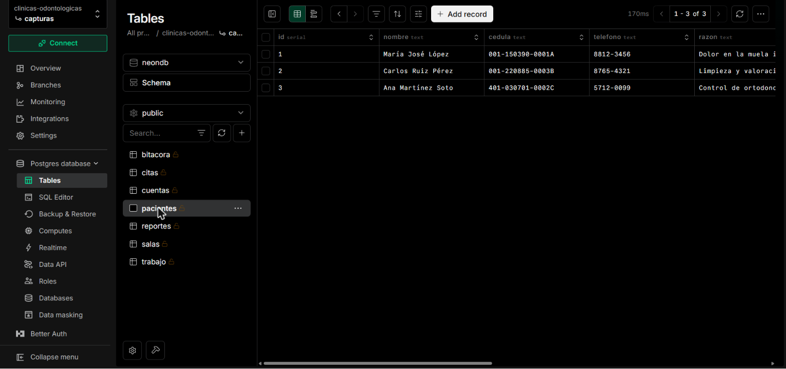
pacientes.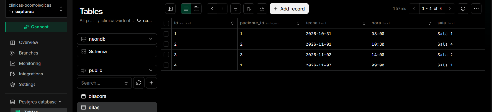
citas: cada cita apunta a su paciente con paciente_id.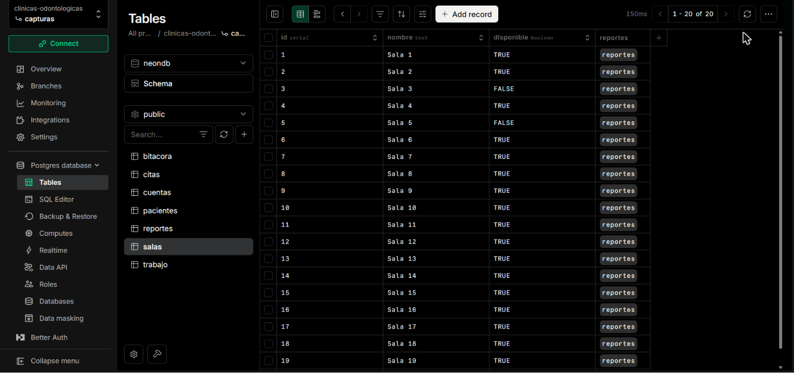
salas: la Sala 3 la marcó la Facultad y la Sala 5 está reportada.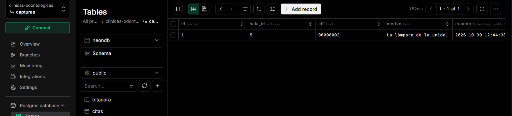
reportes: la falla de la Sala 5, reportada por el CIF 00000002.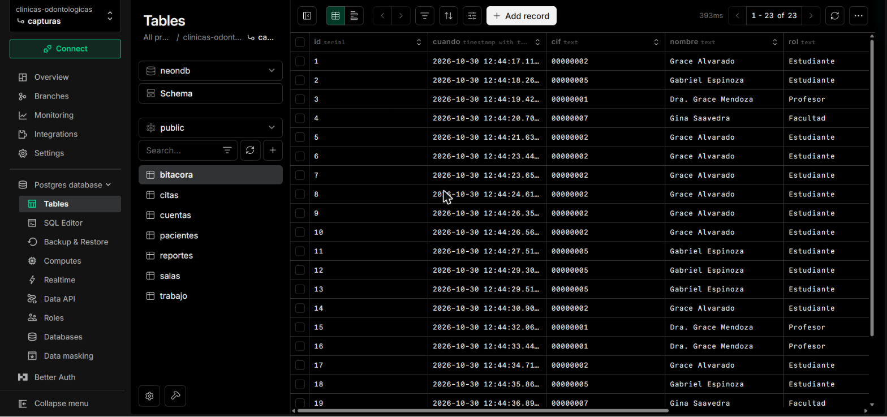
bitacora: la hora se guarda con zona horaria y la aplicación la muestra en hora de Nicaragua.| Dónde | Qué hace | Qué decir si el profesor pregunta |
|---|---|---|
TABLAS y crear_tablas() | Crean las tablas y las cuentas y salas iniciales. | Se ejecuta en cada despliegue y no borra nada: todo es IF NOT EXISTS y las cuentas usan ON CONFLICT DO NOTHING. |
bd() y sql() | Abren una conexión a Neon por petición y la cierran al terminar. | Las consultas usan parámetros (%s), nunca texto pegado, así que no hay inyección SQL. |
quien() | CIF, nombre y rol de quien entró. | Un solo lugar que contesta "¿quién es?"; todas las rutas lo usan. |
exigir_sesion() | Antes de cada petición, sin sesión manda a la entrada. | Es el portón: una ruta nueva queda protegida sin hacer nada. |
paciente(pid) | Trae un paciente solo si el usuario puede verlo. | Un estudiante no abre el expediente de otro ni escribiendo el número en la dirección. |
entrar() | Revisa CIF y contraseña. | Compara contra el hash con check_password_hash; la contraseña nunca se guarda tal cual. |
error_de_cita() | Dice por qué no se puede agendar una cita. | Una sola regla para Citas y para el paso 2: fecha y hora no pasadas (hora de Nicaragua), sala disponible y no ocupada. |
anotar() y lugar_de() | Escriben la bitácora con la ubicación aproximada. | La ubicación se busca una vez por sesión; si el servicio no responde, la acción se anota igual. |
salas() | Plano, reporte de fallas y su solución. | Reportar y solucionar van en una transacción: o se guarda todo o nada. |
traspaso() | Cambia un paciente de estudiante. | Cierra el período anterior con el resumen y abre uno nuevo, en una transacción. |
expediente_pdf() | Arma el expediente en PDF con reportlab. | Se escribe en memoria y se descarga; incluye la firma como imagen. |
@app.route y se lee de corrido, así que se ve cómo se decide cada permiso.Dockerfile. Las claves (la cadena de conexión de Neon y la clave de sesión) viven como secretos de Fly, no en el código.Todas están comprobadas en pruebas.py, que dice OK o FALLO por cada caso.
| Sección | Para qué sirve |
|---|---|
| Odontograma | Foto presencial y odontograma digital |
| Tratamientos y cobros | Procedimientos, tarifario y abonos |
| Inventario | Materiales de la clínica |
| Cuentas | Que la Facultad cree cuentas y que cada persona cambie su contraseña; la UAM definirá cómo. |
main del proyecto clinicas-odontologicas. No se pierden al reiniciar la aplicación.paciente() no entrega un paciente a un estudiante que no lo tiene a cargo; todo viaja por HTTPS y la sesión se vence sola.